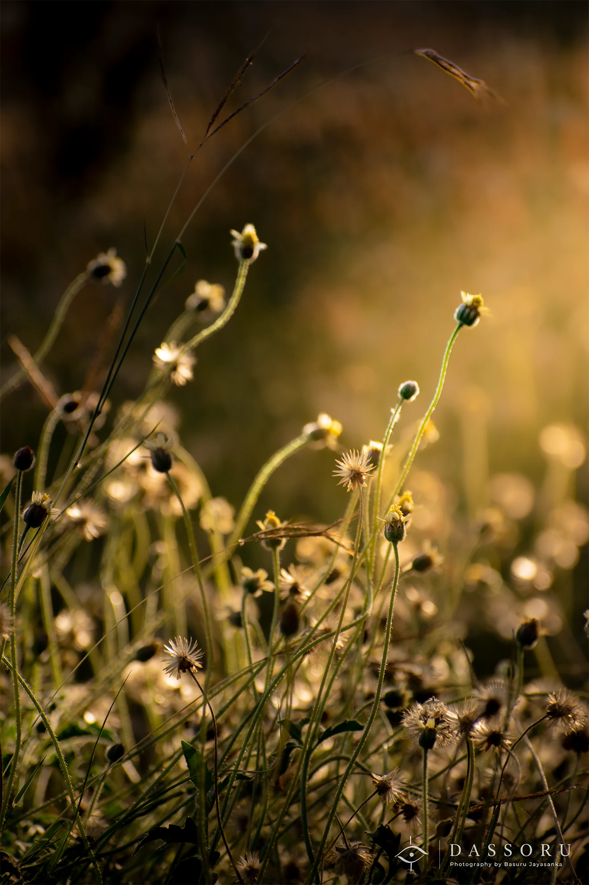

NATURE
Wild Flowers
Even a forgotten flower has a purpose.
Jamnagar can be harsh.
The land was dry, hot and unforgiving, not far from the India–Pakistan border. Yet one morning, the first rays of sunlight found these wild flowers and made them shine.
Among the flowers, one dried seed head caught my attention.
It was no longer beautiful in the way the blooming flowers were. Most people would probably look at the colourful flowers and walk past the dry one.
But that dried flower had already completed its work.
Its seeds had been released to the wind, carried away to begin new lives somewhere else. Its purpose was fulfilled.
Perhaps one day, new flowers would bloom because of what this forgotten little flower had done.
No one may notice the dried flower. No one may remember it.
But I wanted to.
I photographed it because sometimes the things that quietly give everything they have to make the world beautiful are the things we notice the least.
- Location
- Jamnagar, India
- Date
- February 2023
- Photographer
- Basuru Jayasanka
- Category
- Nature
For commercial use, publication, prints or image licensing, please contact Basuru directly via email or WhatsApp.